반도체설계산업기사 (2016-05-08 기출문제)
1과목: 반도체공학
1. 과대전류에 대한 보호용으로 사용되는 다이오드는?
- 제너 다이오드
- 터널 다이오드
- 리드 다이오드
- 본드형 다이오드
(정답률: 76%)

2. 반도체 공정에서 산화막 공정의 목적과 거리가 먼 것은?
- 표면 유전성(surface dielectric) 효과
- 표면 안정화(surface passivation) 효과
- 이온주입 및 불순물 확산공정에 대한 마스킹(selective masking) 효과
- 저온증착(Low Temperature Chemical Vapor Deposition) 효과
(정답률: 70%)
3. 바이폴라 트랜지스터 존재하는 접합은?
- 베이스(Base) - 소스(Source) 접합
- 이미터(Emitter) - 드레인(Drain) 접합
- 컬렉터(Collector) - 베이스(Base) 접합
- 이미터(Emitter) - 컬렉터(Collector) 접합
(정답률: 70%)
4. 바이폴라 트랜지스터에서 이미터-베이스 접합에 순방향 바이어스, 컬렉터-베이스 접합에 순방향 바이어스 전압을 걸었을 때의 트랜지스터의 동작 상태는?
- 활성 상태
- 포화 상태
- 차단 상태
- 역활성 상태
(정답률: 70%)
5. 반도체에서 전자가 원자의 속박으로부터 벗어나 전계에 의해 자유롭게 움직일 수 있는 에너지대는?
- 가전자대
- 충만대
- 금지대
- 전도대
(정답률: 81%)
6. pn접합이 순방향 바이어스일 때 동작으로 옳은 것은?
- p형 반도체의 정공만 n형 반도체로 이동한다.
- n형 반도체의 전자만 p형 반도체로 이동한다.
- 전류가 흐르지 않는다.
- 두 반도체의 다수 캐리어가 서로 상대편 영역으로 이동한다.
(정답률: 78%)
7. 에너지 밴드의 종류에 해당하지 않는 것은?
- 가전자대
- 금지대
- 전자대
- 전도대
(정답률: 77%)
8. 원자번호 14인 Si 원자의 최외각(M각) 전자는 몇 개인가?
- 2
- 4
- 8
- 10
(정답률: 82%)
9. 실리콘 pn접합의 형태를 이루고 있으며, 역방향 직류 전원에서 동작하며, 역방향 항복에 이르면 전류가 급격히 변하여도 항복 전압은 거의 일정한 소자는?
- 정류기(rectifier)
- 바랙터 다이오드(varactor diode)
- 스위칭 다이오드(switching diode)
- 제너 다이오드(zener diode)
(정답률: 81%)
10. 단순입방의 구조를 갖는 반도체 재료에서 1개의 단위 셀당 포함되는 원자의 개수는?
- 1
- 2
- 3
- 4
(정답률: 83%)
11. pn접합에서 외부에 전계가 없는데도 전위장벽이 발생하는 이유는?
- 분리 작용
- 항복 작용
- 확산 작용
- 제너 현상
(정답률: 81%)
12. MOSFET의 커패시턴스 C는? (단, COX는 산화막 커패시턴스, CS는 공핍층 커패시턴스 이다.)
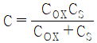
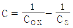
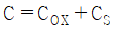
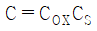
(정답률: 74%)
13. NPN트랜지스터 ICEO에 대한 설명으로 옳은 것은?
- 베이스에 흐르는 누설전류이다.
- 차단상태에서 컬렉터에 흐르는 누설전류이다.
- 포화상태에서 컬렉터에 흐르는 누설전류이다.
- 차단상태에서 베이스에 흐르는 누설전류이다.
(정답률: 57%)
14. 접합전계효과트랜지스터(JFET)에서 핀치-오프(Pinch-off) 전압이란? (단, 드레인 전류 ID, VGS = 0 V 인 상태이다.)
- JEFT 애벌런치 전압
- ID가 일정하게 될 때의 VDS의 전압
- 드레인-소스 사이의 전압
- 채널 폭이 최소로 되는 게이트 역방향 전압
(정답률: 54%)
15. MOSFET의 설명으로 거리가 먼 것은?
- 게이트-소스 간에 순방향 전압 VGS을 공급하면 드레인과 소스 사이에 채널이 형성된다.
- 드레인-소스 간에 역방향 전압 VDS을 공급하면 드레인 전류 ID가 흐른다.
- VGS을 증가시키면 채널의 폭이 두꺼워져 드레인 ID가 증가한다.
- BJT에 비하여 전력소모가 많은 트랜지스터이다.
(정답률: 77%)
16. pn접합에서 전류가 0 일 때의 설명으로 가장 적합한 것은?
- 접합면을 지나는 다수 캐리어(Carrier)가 없다.
- 접합면을 지나는 소수 캐리어(Carrier)가 없다.
- 접합면을 지나는 다수 캐리어(Carrier)와 소수 캐리어가 같다.
- 접합면을 지나는 캐리어(Carrier)의 농도가 적다.
(정답률: 74%)
17. pn접합의 공간 전하영역에 대한 설명으로 틀린 것은?
- 움직이지 않는 도너와 억셉터 이온이 있다.
- 공핍 영역(Depletion Region)이라고도 한다.
- 거의가 다수 캐리어이다.
- 전자 및 정공이 거의 없다.
(정답률: 73%)
18. 역방향 바이어스 전압에 의해서 전류가 흐르는 다이오드로서 정전압 회로에 사용되는 것은?
- 제너 다이오드
- 터널 다이오드
- 가변용량 다이오드
- 정류 다이오드
(정답률: 78%)
19. p형과 n형 반도체에서 다수 반송자(Carrier)를 옳게 나타낸 것은?
- p형 : 전자, n형 : 전자
- p형 : 정공, n형 : 정공
- p형 : 전자, n형 : 정공
- p형 : 정공, n형 : 전자
(정답률: 77%)
20. 일정한 온도 하에서 n형 반도체의 도너 불순물 농도를 증가시키면 페르미 준위는?
- 전도대에 접근한다.
- 가전자대에 접근한다.
- 금지대 중앙에 위치한다.
- 금지대 중앙으로 접근한다.
(정답률: 65%)
2과목: 전자회로
21. 그림과 같은 파형의 전압을 교류전압계(AC Voltmeter)로 측정할 때 옳은 것은?
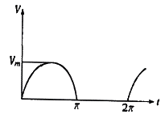
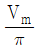
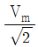
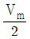
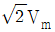
(정답률: 64%)
22. 금속산화물반도체 전계효과 트렌지스터(MOSFET)에 대한 설명으로 틀린 것은?
- 게이트의 전압이 임계 전압 이상으로 커지면 채널이 형성되기 시작하여 점차 채널폭이 감소한다.
- 공핍형(depletion, D)과 증가형(enhancement, E) 2가지 형태가 있다.
- 정(+)의 게이트-소스 간에 전압이 가해지면 MOSFET는 증가형으로 동작한다.
- 공핍형 MOSFET는 게이트 전압이 0V일 때에도 채널이 존재한다.
(정답률: 66%)
23. 주파수 대역폭을 넓히기 위한 방법으로 적합하지 않은 것은?
- 부귀환(feedback)을 사용한다.
- 복동조 회로(double tuned circuit)를 사용한다
- 동조회로(tuning circuit)의 Q를 높인다.
- 스태거 증폭(stagger amplification) 방식을 사용한다.
(정답률: 56%)
24. 연산증폭기 회로에서 출력 VO를 나타내는 식으로 가장 적합한 것은?
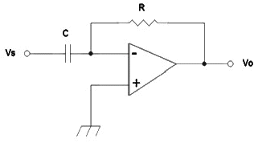
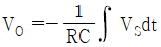
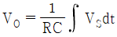
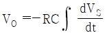
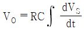
(정답률: 60%)
25. TV 수상기나 레이더 등과 같이 광대역 증폭을 요구하는 회로에 응용되는 증폭기는?
- 스태거 동조 증폭기
- 단일 동조 증폭기
- 복동조 증폭기
- 캐스코드 증폭기
(정답률: 68%)
26. 정류기의 직류 출력전압이 전부하일 때 200V, 무부하인 경우 225V 이라면 전압변동률은 몇 % 인가?
- 10
- 12.5
- 20
- 25
(정답률: 78%)
27. 이상적인 차동증폭기의 공통성분제거비(CMRR)는?
- 0
- 1
- -1
- 무한대(∞)
(정답률: 80%)
28. 트랜지스터의 콜렉터 손실이 최대 정격 15W인 두 개의 트랜지스터 B급 푸시풀(push-pull)로 동작하려할 때, 콜렉터 손실의 최대 정격이 허용하는 범위에서 최대 출력은 약 몇 W 인가?
- 30
- 45
- 60
- 75
(정답률: 68%)
29. 단상 반파 정류회로의 이론상 최대 정류효율은 몇 % 인가? (단, 정류 효율 : η,
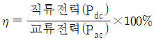
이다.)- 40.5
- 48.2
- 81.2
- 91.6
(정답률: 67%)
30. 다음 회로에서 출력전압은 몇 V 인가?
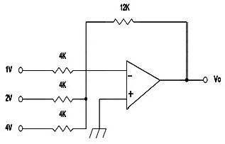
- -6
- -12
- -21
- -36
(정답률: 76%)
31. 다음 회로의 명칭으로 알맞은 것은?
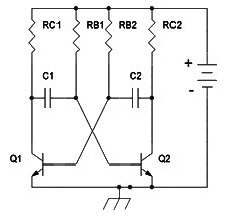
- 포스터-실리 검파기
- 멀티-바이브레이터
- 연산증폭기
- 차동증폭기
(정답률: 84%)
32. 이상적인 구형파 입력 파형에 대한 출력 파형의 응답 시에 진폭과 시간 관계가 그림과 같을 때 하강 시간(fall time)은 몇 ㎲ 인가? (단, 수치의 모든 단위는 ㎲ 이다.)
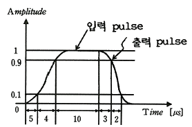
- 2
- 4
- 5
- 13
(정답률: 76%)
33. 트랜지스터 증폭기의 저주파(중간영역)에서의 전류이득을 0㏈라고 할 때 α차단 주파수에서의 전류이득은 몇 ㏈ 인가?
- 0
- -1
- -3
- -6
(정답률: 70%)
34. 다음 회로에서 전압이득은 Vo/Vi은? (단, Ri = ∞, -Av = ∞ 이다.)
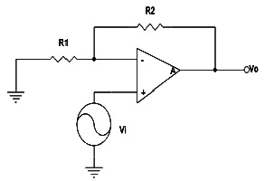
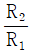
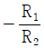
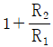
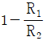
(정답률: 77%)
35. 직류 증폭기에서 온도 변화 등의 영향으로 인하여 출력이 변동되는 현상은?
- 발진
- 증폭
- 초퍼
- 드리프트
(정답률: 70%)
36. 전압 직렬귀환 증폭 회로의 입력 및 출력 저항은 귀환이 없을 때와 비교하면 어떻게 변화하는가?
- 입력 임피던스 : 증가, 출력, 임피던스 : 증가
- 입력 임피던스 : 증가, 출력, 임피던스 : 감소
- 입력 임피던스 : 감소, 출력, 임피던스 : 증가
- 입력 임피던스 : 감소, 출력, 임피던스 : 감소
(정답률: 72%)
37. 이미터 저항을 연결한 CE 증폭기에 대한 설명으로 적합하지 않은 것은?
- 입력저항이 증가한다.
- 전압이득은 감소한다.
- 출력저항이 많이 감소한다.
- 전류이득은 거의 변화 없다.
(정답률: 51%)
38. 다음 같은 증폭기에 관한 설명으로 틀린 것은?
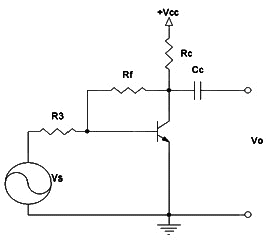
- 부귀환을 걸어줌으로써 출력 임피던스는 감소한다.
- 부귀환을 걸어줌으로써 입력 임피던스는 증가한다.
- 무귀환 때에 비해 안정도가 좋아진다.
- 부귀환을 걸어줌으로써 일그러짐은 감소한다.
(정답률: 58%)
39. 단위 이득 주파수(fT)에 대한 설명으로 가장 적합한 것은?
- 개방 전압 이득이 10 ㏈가 되는 주파수
- 개방 전압 이득이 0 ㏈가 되는 주파수
- 개방 전압 이득이 최대 이득에서 6 ㏈가 떨어지는 주파수
- 개방 전압 이득이 최대 이득에서 3 ㏈가 떨어지는 주파수
(정답률: 61%)
40. FET에 대한 설명으로 틀린 것은?
- 전압제어형 트랜지스터이다.
- BJT 보다 잡음특성이 양호하다.
- BJT 보다 이득 대역폭적(GBW)이 작다.
- BJT 보다 온도변화에 따른 안정성이 낮다.
(정답률: 74%)
3과목: 논리회로
41. 슈미트트리거에 대한 전달함수가 다음 그래프와 같다. 입력 전압이 0V에서 서서히 증가할 경우 입력이 1.5V일 때 출력 전압은 몇 V 인가?
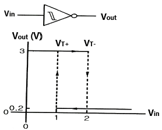
- 3
- 1.5
- 0.2
- 0
(정답률: 70%)
42. T 플립플롭의 특성 설명으로 옳지 않은 것은?
- 특성 방정식은
 이다.
이다. - T=1 일 때 보수 상태가 된다.
- 한 개의 입력을 필요로 한다.
- 0이 입력될 때는 변화가 없다.
(정답률: 64%)
43. 2개의 입력을 가지는 NOR 게이트의 입력에 각각 인버터(inverter)가 접속되어 있을 때 결과적으로 얻어지는 논리 작용?
- AND
- OR
- NAND
- NOT
(정답률: 73%)
44. 논리식 A + (A*B) = A의 불 대수 정리는?
- 결합법칙
- 교환법칙
- 분배법칙
- 흡수법칙
(정답률: 63%)
45. A, B에 해당하는 수치로 옳은 것은?
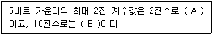
- A=11101, B=30
- A=11111, B=31
- A=11110, B=30
- A=11111, B=29
(정답률: 74%)
46. 많은 입력 선(Line) 중의 하나로부터 2진 정보를 선택하여 단일 출력 선(Line)으로 전송하는 조합회로는?
- 디코더
- 멀티플렉터
- 인코더
- 디멀티플렉서
(정답률: 64%)
47. Multiplexer는 5개의 제어 선택 선(Line)으로 몇 개의 입력 라인을 제어할 수 있는가?
- 1
- 5
- 32
- 128
(정답률: 79%)
48. 송신기가 ASCⅡ코드 1100101을 홀수 패리티를 사용하여 전송한다면 11001011을 보내게 된다. 이때 수신측에서의 논리적인 검사방식에 주로 사용되는 논리회로는?
- AND
- NOT
- OR
- XOR
(정답률: 72%)
49. 다음 불 대수식을 간단히 하면?
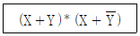
- X
- Y
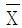
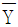
(정답률: 82%)
50. 반가산기 회로의 출력으로 옳은 것은? (단, 입력은 A, B 출력은 Sum, Carry이다.)
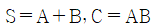
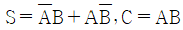
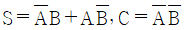
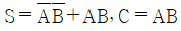
(정답률: 75%)
51. 8진수 (88)4를 16진수로 표현하면?(오류 신고가 접수된 문제입니다. 반드시 정답과 해설을 확인하시기 바랍니다.)
- 22
- 2A
- 24
- 2C
(정답률: 46%)
52. JK 플립플롭 3개를 연결하여 구성된 회로에서 Cp를 입력으로 하고 A1, A2, A3를 출력으로 할 때 이 호로의 기능으로 옳은 것은?
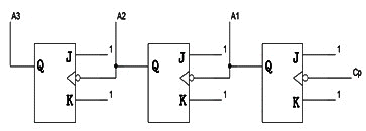
- 32진 카운터 (counter)
- 16진 카운터 (counter)
- 3 bit 2진 리플카운터 (ripple counter)
- 4 bit 2진 리플카운터 (ripple counter)
(정답률: 77%)
53. 논리회로 법칙 중 서로 잘못 연결된 것은?
- 교환법칙 –A+B=B+A
- 결합법칙 – A·(B+C)=A·B+A·C
- 분배법칙 – A+(B·C)=(A+B)·(A+C)
- 드모르간의 법칙 - (A·B)'=A'+B'
(정답률: 69%)
54. Schmitt 트리거 회로의 출력 파형에 나타나는 현상은?
- Singing
- Back swing
- Shoot
- Hysteresis
(정답률: 69%)
55. 그림의 회로에서 입력 A가 “0” 상태일 때 트랜지스터는 어떠한 상태에 있게 되는가?
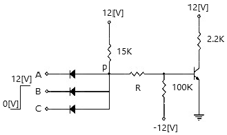
- OFF 상태
- ON 상태
- ON 혹은 OFF상태
- 파괴된다.
(정답률: 78%)
56. 두 개의 스위치를 직렬 연결하여 스위치 모두 닫혀 있을 때, 부하에 전류가 흐러서 불이 켜지게 하는 논리 회로는?
- NAND
- AND
- NOR
- OR
(정답률: 60%)
57. 컴퓨터 내부에서 디지털로 코드화된 데이터를 해독하여 그에 대응하는 아날로그 신호로 바꿔주는 것은?
- 인코더
- 디코더
- 비교기
- 멀티플렉서
(정답률: 71%)
58. 일련의 순차적인 수를 세는 회로는?
- 부호기
- 인코더
- 레지스터
- 카운터
(정답률: 78%)
59. Parity에 대한 설명으로 옳은 것은?
- 에러 검출을 위한 비트이다.
- 입출력 장치용 코드이다.
- 문자를 나타내는 코드다.
- 아날로그 정보를 디지털 정보로 교환한다.
(정답률: 79%)
60. 다음 함수(function)를 간략히 한 결과 Y는?
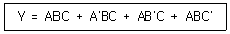
- Y= AB + B'C
- Y= A + B + C
- Y= A'B' + B'C' + A'C'
- Y= AB + BC +AC
(정답률: 64%)
4과목: 집적회로 설계이론
61. 레이아웃 패턴을 설계자가 직접 설계하는 방식으로 가장 작은 면적을 갖는 집적회로(IC)는?
- 반주문형 IC
- 완전주문형 IC
- CPLD
- FPGA
(정답률: 82%)
62. 기판 바이어스 효과(BODY EFFECT)에 대한 설명으로 틀린 것은?
- MOSFET에서 소스와 기판 사이의 역바이어스 전압에 따른 문턱 전압의 변화를 나타내는 변수이다.
- 문턱 전압의 증가가 발생한다.
- IDS전류의 증가가 일어난다.
- 스위칭 동작이 느려진다.
(정답률: 55%)
63. 다음 중 CMOS IC를 취급하는 방법에 대한 설명으로 틀린 것은?
- 부품을 다룰 때는 반드시 정전기 방지용 비닐에 담아서 사용한다.
- 디바이스에 전원을 공급한 상태에서 디바이스의 입력에 신호를 공급한다.
- 전원이 공급된 상태에서 디바이스를 제거한다.
- 사용하지 않은 입력단자는 모두 VCC 또는 접지에 연결한다.
(정답률: 79%)
64. MOSFET에 생성될 수 있는 커패시턴스가 아닌 것은?
- 게이트와 드레인 간 커패시턴스
- 게이트와 벌크 간 커패시턴스
- 소스와 드레인 간 커패시턴스
- 소스와 벌크 간 커패시턴스
(정답률: 70%)
65. 게이트 수준에서 검증된 설계 데이터를 집적회로 구현에 필요한 마스크 제작 데이터로 변환시키는 과정은?
- 알고리즘 설계
- 기능 수준 설계
- 게이트 수준 설계
- 레이아웃 설계
(정답률: 78%)
66. 결정 내의 스트레인과 결함을 줄이고, 단결정의 성장을 촉진시키기 위해 웨이퍼를 일정 시간 온도가 높은 곳에서 의도적으로 넣어두는 것은?
- 도핑(doping)
- 어닐링(annealing)
- 코팅(coating)
- 테이퍼링(tapering)
(정답률: 83%)
67. CMOS NAND 게이트의 구조에 대한 설명으로 옳은 것은?
- PMOS는 병렬로 연결되고, NMOS는 작렬로 연결된다.
- PMOS는 병렬로 연결되고, NMOS도 병렬로 연결된다.
- PMOS는 직렬로 연결되고, NMOS도 직렬로 연결된다.
- PMOS는 직렬로 연결되고, NMOS는 병렬로 연결된다.
(정답률: 83%)
68. 클록(clock)에 대한 설명으로 틀린 것은?
- 정해진 신호의 전압값을 가지고 일정하고 반복적인 펄스형태의 신호이다.
- 주로 아날로그 회로의 입력으로 사용된다.
- 클록의 펄스형태가 바뀌는 곳을 클록에지(clock edge)라고 한다.
- 펄스가 존재하는 곳을 정레벨, 펄스가 존재하지 않는 곳을 부레벨이라고 한다.
(정답률: 71%)
69. 반도체 칩 내부와 외부 환경과의 연결을 위한 것은?
- 코어(core)
- 본딩 패드(bonding pad)
- 비아(via)
- 웨이퍼(wafer)
(정답률: 73%)
70. 집적회로 전반부 설계에서 동작 수준과 게이트 수준 사이에 위치하는 것으로서 시스템을 구성하는 각 기능 블록과 그 사이의 연결 버스타이밍을 기술하는 것은?
- TTL
- DTL
- HDL
- RTL
(정답률: 60%)
71. 기억보존(REFRESH)DL 필요하고 수시로 읽고 쓰기가 가능한 기억소자는?
- DRAM
- SRAM
- PROM
- EPROM
(정답률: 70%)
72. 다음 CMOS 공정 중에서 가장 먼저 하는 것은?
- n-well 형성
- active 영역 정의
- metal 증착 및 배선
- 소스, 드레인 확산 형성
(정답률: 84%)
73. 드레인 접합의 공핍층이 커져 드레인 부근의 채널이 드레인 영역과 차단되는 현상은?
- 핀치오프(pinch-off)현상
- 사태항복(acalanche breakdown)현상
- 포화(saturation) 현상
- 반전(inversion) 현상
(정답률: 79%)
74. 레이아웃 설계 검증과정 중 레이아웃과 회로도의 네트리스트(Netlist)를 비교하여 상호연결성을 검증하는 과정은?
- ERC
- DRC
- LVS
- HDL
(정답률: 73%)
75. 전기적으로 프로그램 기록과 소거가 가능한 기억 소자는?
- PROM
- EPROM
- EEPROM
- Mask ROM
(정답률: 62%)
76. 레이아웃 설계가 끝난 후 레이아웃 설계 자료를 반영하여 논리 시뮬레이션을 다시 하는 것은?
- Logic Synthesis
- Bottom-up Design
- Back Annotation
- Structured Design
(정답률: 81%)
77. 도미노 로직(domino logic)에 대한 설명으로 옳지 않은 것은?
- 도미노 로직은 동적 CMOS 로직의 한 종류이다.
- 도미노 로직은 출력단에 인버팅 반 래치가 있어 동적 CMOS 로직의 출력과 같다.
- 도미노 로직은 사전 충전 시 출력은 항상 0이므로 다음 단에 직접 연결해도 출력방전이 없다.
- 도미노 로직은 사전 충전 시 출력은 항상 0이므로 잡음에도 강하다.
(정답률: 57%)
78. 반도체 공정에서 웨이퍼에 마스크를 대고 그 위에 자외선 광원을 이용하여 마스크의 모양을 웨이퍼에 전사하는 작업을 무엇이라 하는가?
- 포토리소그래피 공정
- 에피택시 공정
- 증착과 식각
- 이온 주입 공정
(정답률: 82%)
79. 에피택셜(epitaxial) 성장은 어느 경우에 적합한가?
- 기판에 매우 얇은 다결정을 성장시킬 때
- 기판에 매우 얇은 단결정을 성장시킬 때
- 원통형 잉곳(ingot)을 성장시킬 때
- 불순물을 기판에 골고루 분포시킬 때
(정답률: 69%)
80. CMOS 논리회로의 특성으로 틀린 것은?
- 조합논리회로는 현재의 입력 값에 의해서만 출력이 결정된다.
- 순차논리회로는 현재의 입력과 과거의 입력으로 출력이 결정된다.
- 순차논리회로는 래치(latch)나 플립플롭의 기억소자를 포함한다.
- CMOS 논리회로에서 용량성 노드는 고려할 필요가 없다.
(정답률: 78%)